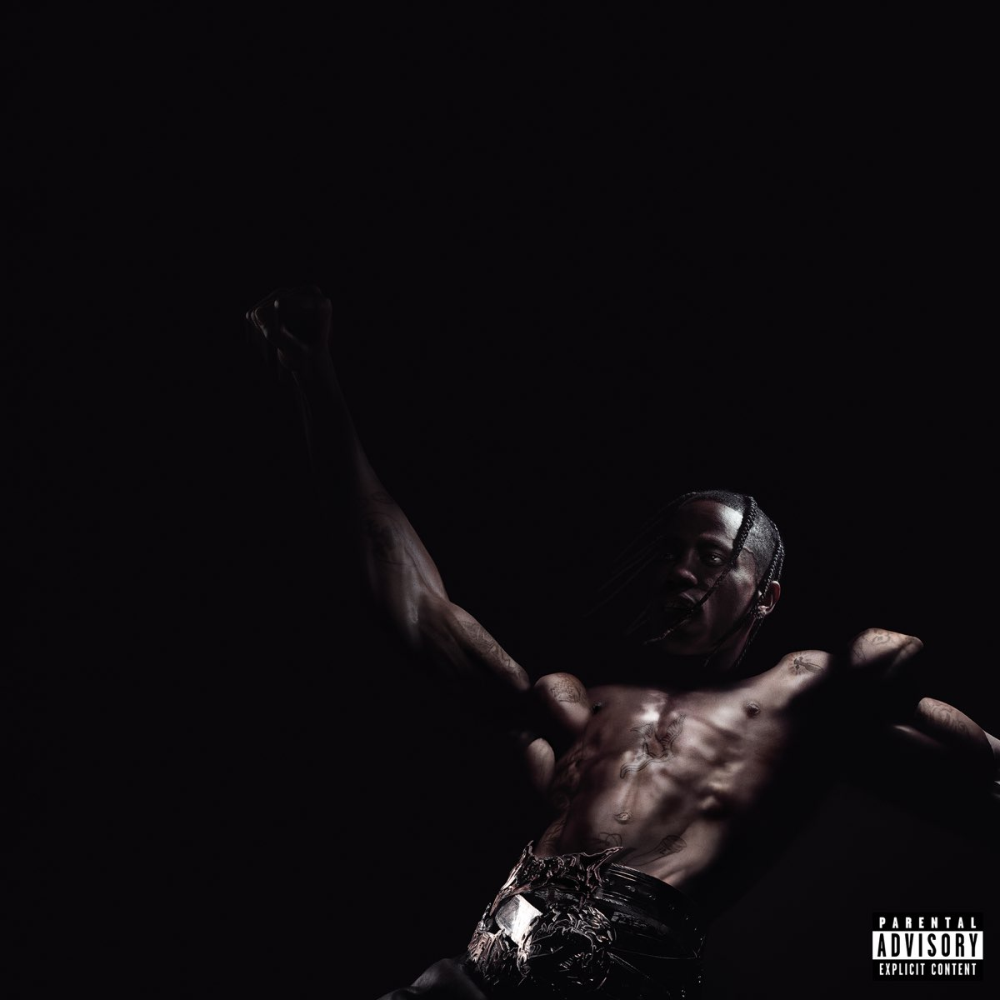

{kind=link}
{kind=link}
.jpeg)
.jpeg)
Jacques Berman Webster II (Houston, 30 de abril de 1991), mais conhecido por seu nome artístico Travis Scott (antes estilizado como Travi$ Scott), é um rapper, cantor, compositor e produtor musical norte-americano.
Em 2012, Scott assinou seu primeiro grande contrato com a gravadora Epic Records. Em novembro do mesmo ano, Scott assinou um contrato com a GOOD Music, gravadora de Kanye West, como parte da sua produção no álbum colaborativo Cruel Summer. Em abril de 2013, Travis Scott assinou um contrato com a Grand Hustle Records, do rapper T.
O primeiro projeto completo de estreia de Scott foi uma mixtape intitulada Owl Pharaoh, lançada em 2013. Em seguida, lançou sua segunda mixtape, Days Before Rodeo, em agosto de 2014. Seu primeiro álbum de estúdio, Rodeo, foi lançado somente em setembro de 2015 e o hit "Antidote" alcançou as paradas de sucesso nos Estados Unidos, figurando no top 20 da Billboard Hot 100. Seu segundo álbum, Birds in the Trap Sing McKnight, foi lançado em setembro de 2016, gerando críticas positivas. Em 2017, Travis Scott lançou um álbum em colaboração com Quavo intitulado Huncho Jack, Jack Huncho, assinado por ambos com o nome do novo dueto, Huncho Jack. Ele lançou seu terceiro álbum, Astroworld, em 3 de agosto de 2018.
Aos 17 anos, Travis iniciou sua carreira como produtor musical, com foco na produção de hip-hop. Posteriormente, ele entrou em sua primeira parceria com Chris Holloway, seu amigo de longa data, formando a dupla The Graduates ("Os Graduados", em tradução livre). Em 2008, a dupla lançou o seu primeiro EP sem título na rede social Myspace.
No ano seguinte, Travis e OG Chess, um dos seus colegas de escola, formou o grupo The Classmates ("Os Colegas", em tradução livre). The Classmates lançou dois projetos: Buddy Rich, em 2009, e Cruis'n USA em 2010.[10] Travis lidou principalmente com o trabalho de produção em ambos os projetos. A dupla permaneceu unida até o final de 2012, quando conflitos pessoais e disputas financeiras levaram à dissolução do grupo.
Depois de sair da faculdade, ele se mudou de Houston, Texas para Washington, Nova York, onde começou a trabalhar com o amigo Mike Waxx, dono do site de música Illroots. Depois de se mudar para Nova York, Travis dormiu no chão na casa de seu amigo e passou a maior parte de seu tempo no estúdio de Just Blaze. Eventualmente frustrado em Nova York, e com a falta de progressão na carreira,[9] mudou-se para Los Angeles, Califórnia, depois de apenas quatro meses no estado.
Fala sobre a renovação da vida do travis scott

Fala sobre a renovação o outro lado do mundo
"Começo da historia do rapper"
"Segundo album do Trapper"
Para mais INFOMAÇÕES entre em contato 2ªPágina
{kind=link}